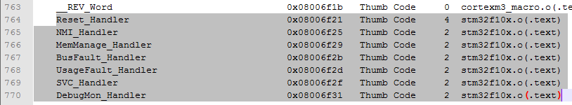
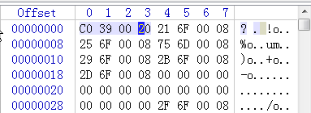

一、STM32启动文件详细解析
STM32启动文件详细解析（V3.5.0） 以:startup_stm32f10x_hd.s为例
- ;******************** (C) COPYRIGHT 2011 STMicroelectronics ********************
- ;* File Name : startup_stm32f10x_hd.s
- ;* Author : MCD Application Team
- ;* Version : V3.5.0
- ;* Date : 11-March-2011
- ;* Description : STM32F10x High Density Devices vector table for MDK-ARM
- ;* toolchain.
- ;* This module performs:
- ;* - Set the initial SP
- ;* - Set the initial PC == Reset_Handler
- ;* - Set the vector table entries with the exceptions ISR address
- ;* - Configure the clock system and also configure the external
- ;* SRAM mounted on STM3210E-EVAL board to be used as data
- ;* memory (optional, to be enabled by user)
- ;* - Branches to __main in the C library (which eventually
- ;* calls main()).
- ;* After Reset the CortexM3 processor is in Thread mode,
- ;* priority is Privileged, and the Stack is set to Main.
- ;* <<< Use Configuration Wizard in Context Menu >>>
- ;*******************************************************************************
- ; THE PRESENT FIRMWARE WHICH IS FOR GUIDANCE ONLY AIMS AT PROVIDING CUSTOMERS
- ; WITH CODING INFORMATION REGARDING THEIR PRODUCTS IN ORDER FOR THEM TO SAVE TIME.
- ; AS A RESULT, STMICROELECTRONICS SHALL NOT BE HELD LIABLE FOR ANY DIRECT,
- ; INDIRECT OR CONSEQUENTIAL DAMAGES WITH RESPECT TO ANY CLAIMS ARISING FROM THE
- ; CONTENT OF SUCH FIRMWARE AND/OR THE USE MADE BY CUSTOMERS OF THE CODING
- ; INFORMATION CONTAINED HEREIN IN CONNECTION WITH THEIR PRODUCTS.
- ;*******************************************************************************
-
- ; Amount of memory (in bytes) allocated for Stack
- ; Tailor this value to your application needs
- ; <h> Stack Configuration ;栈定义
- ; <o> Stack Size (in Bytes) <0x0-0xFFFFFFFF:8>
- ; </h>
-
- Stack_Size EQU 0x00000400 ;EQU伪指令，作用是左边的符号名代表右边的表达式</span>
-
- AREA STACK, NOINIT, READWRITE, ALIGN=3 ;定义栈段：名称为STACK，未初始化，可读写，ELF 的栈段按2^3=8对齐
- Stack_Mem SPACE Stack_Size ;分配一片连续的存储区域并初始化为 0，栈空间：0x400个字节
- __initial_sp ;栈空间顶地址
-
-
- ; <h> Heap Configuration ;堆定义
- ; <o> Heap Size (in Bytes) <0x0-0xFFFFFFFF:8>
- ; </h>
-
- Heap_Size EQU 0x00000200
- AREA HEAP, NOINIT, READWRITE, ALIGN=3
-
- __heap_base ;堆空间起始地址
- Heap_Mem SPACE Heap_Size ;堆空间:0x200个字节
- __heap_limit ;堆空间结束地址
-
-
- PRESERVE8 ;PRESERVE8 指令指定当前文件保持堆栈八字节对齐
- THUMB ;告诉汇编器下面是32位的Thumb指令，如果需要汇编器将插入位以保证对齐
-
- ; Vector Table Mapped to Address 0 at Reset ;中断向量表定义
- ;实际上是在CODE区（假设STM32从FLASH启动，则此中断向量表起始地址即为0x8000000）
- AREA RESET, DATA, READONLY ;定义一块数据段<DATA>，只可读<READONLY，默认READWRITE>，段名字是RESET
- EXPORT __Vectors ;EXPORT:在程序中声明一个全局的标号__Vectors，该标号可在其他的文件中引用
- EXPORT __Vectors_End ;在程序中声明一个全局的标号__Vectors_End
- EXPORT __Vectors_Size ;在程序中声明一个全局的标号__Vectors_Size
-
- ;DCD(DCDU)用于分配一片连续的字存储单元并用指定的数据初始化。
- __Vectors DCD __initial_sp ; Top of Stack ;该处物理地址值存储__initial_sp所表示的地址值,即为 __Vetors 标号所表示的值
- DCD Reset_Handler ; Reset Handler
- DCD NMI_Handler ; NMI Handler
- DCD HardFault_Handler ; Hard Fault Handler
- DCD MemManage_Handler ; MPU Fault Handler
- DCD BusFault_Handler ; Bus Fault Handler
- DCD UsageFault_Handler ; Usage Fault Handler
- DCD 0 ; Reserved
- DCD 0 ; Reserved
- DCD 0 ; Reserved
- DCD 0 ; Reserved
- DCD SVC_Handler ; SVCall Handler
- DCD DebugMon_Handler ; Debug Monitor Handler
- DCD 0 ; Reserved
- DCD PendSV_Handler ; PendSV Handler
- DCD SysTick_Handler ; SysTick Handler
-
- ; External Interrupts ;以下为外部中断向量表
- DCD WWDG_IRQHandler ; Window Watchdog
- DCD PVD_IRQHandler ; PVD through EXTI Line detect
- DCD TAMPER_IRQHandler ; Tamper
- DCD RTC_IRQHandler ; RTC
- DCD FLASH_IRQHandler ; Flash
- DCD RCC_IRQHandler ; RCC
- DCD EXTI0_IRQHandler ; EXTI Line 0
- DCD EXTI1_IRQHandler ; EXTI Line 1
- DCD EXTI2_IRQHandler ; EXTI Line 2
- DCD EXTI3_IRQHandler ; EXTI Line 3
- DCD EXTI4_IRQHandler ; EXTI Line 4
- DCD DMA1_Channel1_IRQHandler ; DMA1 Channel 1
- DCD DMA1_Channel2_IRQHandler ; DMA1 Channel 2
- DCD DMA1_Channel3_IRQHandler ; DMA1 Channel 3
- DCD DMA1_Channel4_IRQHandler ; DMA1 Channel 4
- DCD DMA1_Channel5_IRQHandler ; DMA1 Channel 5
- DCD DMA1_Channel6_IRQHandler ; DMA1 Channel 6
- DCD DMA1_Channel7_IRQHandler ; DMA1 Channel 7
- DCD ADC1_2_IRQHandler ; ADC1 & ADC2
- DCD USB_HP_CAN1_TX_IRQHandler ; USB High Priority or CAN1 TX
- DCD USB_LP_CAN1_RX0_IRQHandler ; USB Low Priority or CAN1 RX0
- DCD CAN1_RX1_IRQHandler ; CAN1 RX1
- DCD CAN1_SCE_IRQHandler ; CAN1 SCE
- DCD EXTI9_5_IRQHandler ; EXTI Line 9..5
- DCD TIM1_BRK_IRQHandler ; TIM1 Break
- DCD TIM1_UP_IRQHandler ; TIM1 Update
- DCD TIM1_TRG_COM_IRQHandler ; TIM1 Trigger and Commutation
- DCD TIM1_CC_IRQHandler ; TIM1 Capture Compare
- DCD TIM2_IRQHandler ; TIM2
- DCD TIM3_IRQHandler ; TIM3
- DCD TIM4_IRQHandler ; TIM4
- DCD I2C1_EV_IRQHandler ; I2C1 Event
- DCD I2C1_ER_IRQHandler ; I2C1 Error
- DCD I2C2_EV_IRQHandler ; I2C2 Event
- DCD I2C2_ER_IRQHandler ; I2C2 Error
- DCD SPI1_IRQHandler ; SPI1
- DCD SPI2_IRQHandler ; SPI2
- DCD USART1_IRQHandler ; USART1
- DCD USART2_IRQHandler ; USART2
- DCD USART3_IRQHandler ; USART3
- DCD EXTI15_10_IRQHandler ; EXTI Line 15..10
- DCD RTCAlarm_IRQHandler ; RTC Alarm through EXTI Line
- DCD USBWakeUp_IRQHandler ; USB Wakeup from suspend
- DCD TIM8_BRK_IRQHandler ; TIM8 Break
- DCD TIM8_UP_IRQHandler ; TIM8 Update
- DCD TIM8_TRG_COM_IRQHandler ; TIM8 Trigger and Commutation
- DCD TIM8_CC_IRQHandler ; TIM8 Capture Compare
- DCD ADC3_IRQHandler ; ADC3
- DCD FSMC_IRQHandler ; FSMC
- DCD SDIO_IRQHandler ; SDIO
- DCD TIM5_IRQHandler ; TIM5
- DCD SPI3_IRQHandler ; SPI3
- DCD UART4_IRQHandler ; UART4
- DCD UART5_IRQHandler ; UART5
- DCD TIM6_IRQHandler ; TIM6
- DCD TIM7_IRQHandler ; TIM7
- DCD DMA2_Channel1_IRQHandler ; DMA2 Channel1
- DCD DMA2_Channel2_IRQHandler ; DMA2 Channel2
- DCD DMA2_Channel3_IRQHandler ; DMA2 Channel3
- DCD DMA2_Channel4_5_IRQHandler ; DMA2 Channel4 & Channel5
- __Vectors_End ;Vectors结束
-
- __Vectors_Size EQU __Vectors_End - __Vectors ;得到向量表的大小,304个字节也就是0x130个字节
-
- AREA |.text|, CODE, READONLY ;定义一个代码段，可读，段名字是.text
- ;|.text| 用于表示由 C 编译程序产生的代码段，或用于以某种方式与 C 库关联的代码段
- ; Reset handler ;利用PROC、ENDP这一对伪指令标记程序开始、结束，把程序段分为若干个过程，使程序的结构加清晰
- Reset_Handler PROC
- EXPORT Reset_Handler [WEAK];WEAK声明其他的同名标号优先于该标号被引用,就是说如果外面声明了的话，调用外面的对应函数
- IMPORT __main ;IMPORT:伪指令用于通知编译器要使用的标号在其他的源文件中定义
- IMPORT SystemInit
- LDR R0, =SystemInit ;系统初始化
- BLX R0 ;带链接的跳转，切换指令集,跳到SystemInit
- LDR R0, =__main ;__main为运行时库提供的函数；完成堆栈，堆的初始化等工作，会调用下面定义的__user_initial_stackheap
- BX R0 ;切换指令集,main函数不返回跳到__main,进入C的世界
- ENDP
-
- ; Dummy Exception Handlers (infinite loops which can be modified)
- NMI_Handler PROC
- EXPORT NMI_Handler [WEAK];不可屏蔽中断处理函数
- B .
- ENDP
- HardFault_Handler\ ;\意为换行
- PROC
- EXPORT HardFault_Handler [WEAK];硬件错误处理函数
- B .
- ENDP
- MemManage_Handler\
- PROC
- EXPORT MemManage_Handler [WEAK]
- B .
- ENDP
- BusFault_Handler\
- PROC
- EXPORT BusFault_Handler [WEAK]
- B .
- ENDP
- UsageFault_Handler\
- PROC
- EXPORT UsageFault_Handler [WEAK]
- B .
- ENDP
- SVC_Handler PROC
- EXPORT SVC_Handler [WEAK]
- B .
- ENDP
- DebugMon_Handler\
- PROC
- EXPORT DebugMon_Handler [WEAK]
- B .
- ENDP
- PendSV_Handler PROC
- EXPORT PendSV_Handler [WEAK]
- B .
- ENDP
- SysTick_Handler PROC
- EXPORT SysTick_Handler [WEAK]
- B .
- ENDP
-
- Default_Handler PROC
- ;输出异常向量表标号,方便外部实现异常的具体功能,[WEAK]是弱定义的意思,如果外部定义了,优先执行外部定义,否则下面的函数定义
- EXPORT WWDG_IRQHandler [WEAK]
- EXPORT PVD_IRQHandler [WEAK]
- EXPORT TAMPER_IRQHandler [WEAK]
- EXPORT RTC_IRQHandler [WEAK]
- EXPORT FLASH_IRQHandler [WEAK]
- EXPORT RCC_IRQHandler [WEAK]
- EXPORT EXTI0_IRQHandler [WEAK]
- EXPORT EXTI1_IRQHandler [WEAK]
- EXPORT EXTI2_IRQHandler [WEAK]
- EXPORT EXTI3_IRQHandler [WEAK]
- EXPORT EXTI4_IRQHandler [WEAK]
- EXPORT DMA1_Channel1_IRQHandler [WEAK]
- EXPORT DMA1_Channel2_IRQHandler [WEAK]
- EXPORT DMA1_Channel3_IRQHandler [WEAK]
- EXPORT DMA1_Channel4_IRQHandler [WEAK]
- EXPORT DMA1_Channel5_IRQHandler [WEAK]
- EXPORT DMA1_Channel6_IRQHandler [WEAK]
- EXPORT DMA1_Channel7_IRQHandler [WEAK]
- EXPORT ADC1_2_IRQHandler [WEAK]
- EXPORT USB_HP_CAN1_TX_IRQHandler [WEAK]
- EXPORT USB_LP_CAN1_RX0_IRQHandler [WEAK]
- EXPORT CAN1_RX1_IRQHandler [WEAK]
- EXPORT CAN1_SCE_IRQHandler [WEAK]
- EXPORT EXTI9_5_IRQHandler [WEAK]
- EXPORT TIM1_BRK_IRQHandler [WEAK]
- EXPORT TIM1_UP_IRQHandler [WEAK]
- EXPORT TIM1_TRG_COM_IRQHandler [WEAK]
- EXPORT TIM1_CC_IRQHandler [WEAK]
- EXPORT TIM2_IRQHandler [WEAK]
- EXPORT TIM3_IRQHandler [WEAK]
- EXPORT TIM4_IRQHandler [WEAK]
- EXPORT I2C1_EV_IRQHandler [WEAK]
- EXPORT I2C1_ER_IRQHandler [WEAK]
- EXPORT I2C2_EV_IRQHandler [WEAK]
- EXPORT I2C2_ER_IRQHandler [WEAK]
- EXPORT SPI1_IRQHandler [WEAK]
- EXPORT SPI2_IRQHandler [WEAK]
- EXPORT USART1_IRQHandler [WEAK]
- EXPORT USART2_IRQHandler [WEAK]
- EXPORT USART3_IRQHandler [WEAK]
- EXPORT EXTI15_10_IRQHandler [WEAK]
- EXPORT RTCAlarm_IRQHandler [WEAK]
- EXPORT USBWakeUp_IRQHandler [WEAK]
- EXPORT TIM8_BRK_IRQHandler [WEAK]
- EXPORT TIM8_UP_IRQHandler [WEAK]
- EXPORT TIM8_TRG_COM_IRQHandler [WEAK]
- EXPORT TIM8_CC_IRQHandler [WEAK]
- EXPORT ADC3_IRQHandler [WEAK]
- EXPORT FSMC_IRQHandler [WEAK]
- EXPORT SDIO_IRQHandler [WEAK]
- EXPORT TIM5_IRQHandler [WEAK]
- EXPORT SPI3_IRQHandler [WEAK]
- EXPORT UART4_IRQHandler [WEAK]
- EXPORT UART5_IRQHandler [WEAK]
- EXPORT TIM6_IRQHandler [WEAK]
- EXPORT TIM7_IRQHandler [WEAK]
- EXPORT DMA2_Channel1_IRQHandler [WEAK]
- EXPORT DMA2_Channel2_IRQHandler [WEAK]
- EXPORT DMA2_Channel3_IRQHandler [WEAK]
- EXPORT DMA2_Channel4_5_IRQHandler [WEAK]
- ;如下只是定义一些空函数
- WWDG_IRQHandler
- PVD_IRQHandler
- TAMPER_IRQHandler
- RTC_IRQHandler
- FLASH_IRQHandler
- RCC_IRQHandler
- EXTI0_IRQHandler
- EXTI1_IRQHandler
- EXTI2_IRQHandler
- EXTI3_IRQHandler
- EXTI4_IRQHandler
- DMA1_Channel1_IRQHandler
- DMA1_Channel2_IRQHandler
- DMA1_Channel3_IRQHandler
- DMA1_Channel4_IRQHandler
- DMA1_Channel5_IRQHandler
- DMA1_Channel6_IRQHandler
- DMA1_Channel7_IRQHandler
- ADC1_2_IRQHandler
- USB_HP_CAN1_TX_IRQHandler
- USB_LP_CAN1_RX0_IRQHandler
- CAN1_RX1_IRQHandler
- CAN1_SCE_IRQHandler
- EXTI9_5_IRQHandler
- TIM1_BRK_IRQHandler
- TIM1_UP_IRQHandler
- TIM1_TRG_COM_IRQHandler
- TIM1_CC_IRQHandler
- TIM2_IRQHandler
- TIM3_IRQHandler
- TIM4_IRQHandler
- I2C1_EV_IRQHandler
- I2C1_ER_IRQHandler
- I2C2_EV_IRQHandler
- I2C2_ER_IRQHandler
- SPI1_IRQHandler
- SPI2_IRQHandler
- USART1_IRQHandler
- USART2_IRQHandler
- USART3_IRQHandler
- EXTI15_10_IRQHandler
- RTCAlarm_IRQHandler
- USBWakeUp_IRQHandler
- TIM8_BRK_IRQHandler
- TIM8_UP_IRQHandler
- TIM8_TRG_COM_IRQHandler
- TIM8_CC_IRQHandler
- ADC3_IRQHandler
- FSMC_IRQHandler
- SDIO_IRQHandler
- TIM5_IRQHandler
- SPI3_IRQHandler
- UART4_IRQHandler
- UART5_IRQHandler
- TIM6_IRQHandler
- TIM7_IRQHandler
- DMA2_Channel1_IRQHandler
- DMA2_Channel2_IRQHandler
- DMA2_Channel3_IRQHandler
- DMA2_Channel4_5_IRQHandler
- B .
-
- ENDP
-
- ALIGN ;默认是字对齐方式，也说明了代码是4字节对齐的
-
- ;*******************************************************************************
- ; User Stack and Heap initialization 用户堆栈初始化
- ;*******************************************************************************
- IF :DEF:__MICROLIB ;判断是否使用DEF:__MICROLIB（micro lib），如果勾选了micro lib
-
- EXPORT __initial_sp ;将栈顶地址、堆起始地址、堆结束地址赋予全局属性，使外部程序可用
- EXPORT __heap_base
- EXPORT __heap_limit
-
- ELSE ;如果没有勾选micro lib
-
- IMPORT __use_two_region_memory ;两区堆栈空间，堆和栈有各自的空间地址
- EXPORT __user_initial_stackheap
-
- __user_initial_stackheap ;标号__user_initial_stackheap，表示用户堆栈初始化程序入口
- ;此处是初始化两区的堆栈空间，堆是从由低到高的增长，栈是由高向低生长的，两个是互相独立的数据段，并不能交叉使用。
- LDR R0, = Heap_Mem ;保存堆起始地址
- LDR R1, =(Stack_Mem + Stack_Size) ;保存栈结束地址
- LDR R2, = (Heap_Mem + Heap_Size) ;保存堆结束地址
- LDR R3, = Stack_Mem ;保存栈起始地址
- BX LR
-
- ALIGN
-
- ENDIF
-
- END ;END命令指示汇编器,已到达一个源文件的末尾
-
- ;******************* (C) COPYRIGHT 2011 STMicroelectronics *****END OF FILE*****
二、STM32 中断向量表的位置 、重定向
知道怎么跳到main函数了，那么，中断发生后，又是怎么跑到中断入口地址的呢？
从stm32f10x.s可以看到，已经定义好了一大堆的中断响应函数，这就是中断向量表，标号__Vectors，表示中断向量表入口地址，例如：
AREA RESET, DATA, READONLY ; 定义只读数据段，实际上是在CODE区（假设STM32从FLASH启动，则此中断向量表起始地址即为0x8000000）
- EXPORT __Vectors
- IMPORT OS_CPU_SysTickHandler
- IMPORT OS_CPU_PendSVHandler
- __Vectors DCD __initial_sp ; Top of Stack
- DCD Reset_Handler ; Reset Handler
- DCD NMI_Handler ; NMI Handler
- DCD HardFault_Handler ; Hard Fault Handler
- DCD MemManage_Handler ; MPU Fault Handler
- DCD BusFault_Handler ; Bus Fault Handler
- DCD UsageFault_Handler ; Usage Fault Handler
这个向量表的编写是有讲究的，跟硬件一一对应不能乱写的，CPU找入口地址就靠它了，bin文件开头就是他们的地址，参考手册RM0008的10.1.2节可以看到排列。
我们再结合CORTEX-M3的特性，他上电后根据boot引脚来决定PC位置，比如boot设置为flash启动，则启动后PC跳到0x08000000。此时CPU会先取2个地址，第一个是栈顶地址，第二个是复位异常地址，故有了上面的写法，这样就跳到reset_handler。
那么这个reset_handler的实际地址是多少.？下面的一堆例如Nmi_handler地址又是多少呢？发生中断是怎么跑到这个地址的呢？下面挨个讲解。
1、我们可以通过反向来得知这些入口地址，查看工程下的map文件就可以看到了，这个地址跟keil里面设置的target->flash起始地址息息相关，实际上我们不太需要关心，让编译器分配，中断向量表放的就是他们的地址。
2、对比ARM7/ARM9内核，Cortex-M3内核则是固定了中断向量表的位置而起始地址是可变化的。
3、进到C语言后会先配置NVIC，NVIC_SetVectorTable()里面可以配置中断向量表的起始地址和偏移，主要是告诉CPU该向量表是位于Flash还是Ram，偏移是多少。例如设置为位于Flash内，偏移就是烧入的程序地址，可在Keil target中设置。这样CPU就知道入口地址了。
4、发生中断后，CPU找到中断向量表地址，然后根据偏移（对号入座）再找到中断地址，这样就跳过去了。
我们截一个图说明一下，map文件：

对应的bin文件，看是不是放的上面地址：

显然，200039c0就是栈顶地址，而08006F21就是reset_handler地址！
如何定位？以放到0x20000000为例
1、keil设置ram起始为0x20000100，我们在0x20000000~0x20000100放中断向量表，其他给程序用
2、设置NVIC_SetVectorTable(NVIC_VectTab_FLASH,0);
3、跳到C时把中断向量表拷贝到0x20000000


![]()

![]()


 2万+
2万+

 举报
举报